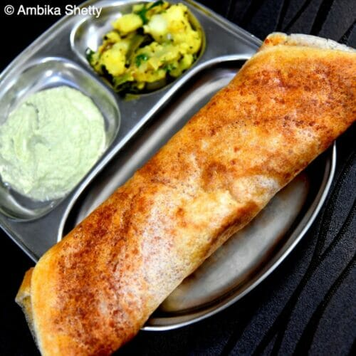
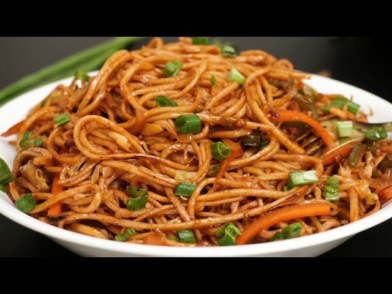
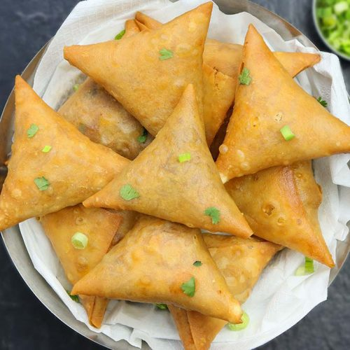

COOKIES

A cookie is a baked or cooked snack or dessert that is typically small, flat and sweet .
It usually contains flour, sugar, egg, and some type of oil, fat, or butter. It may include other ingredients such as raisins, oats, chocolate chips, nuts, etc.
MASALA DOSA
One of the best Vegetarian food.Masala dosa is one that is crisp, aromatic, flavourful and has a potato masala or spiced seasoned potatoes stuffed in it. These crispy crepes are quite addictive and delicious.
NOODLES
Noodles are a type of food made from unleavened dough which is either rolled flat and cut, stretched, or extruded, into long strips or strings.
BURGER

A sandwich consisting of one or more cooked beef patties, placed inside a sliced bread roll or bun roll.
SAMOSA
A samosa or singara is a fried South Asian pastry with a savory filling, including ingredients such as spiced potatoes, onions, and peas. It may take different forms, including triangular, cone, or half-moon shapes, depending on the region